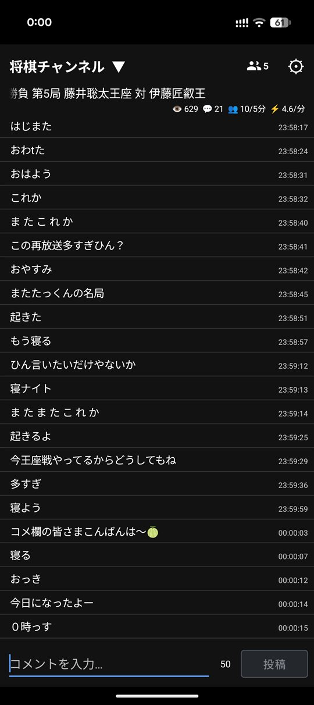
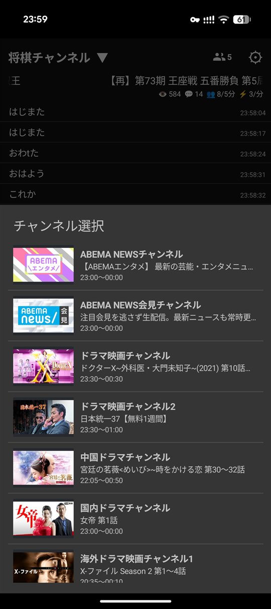
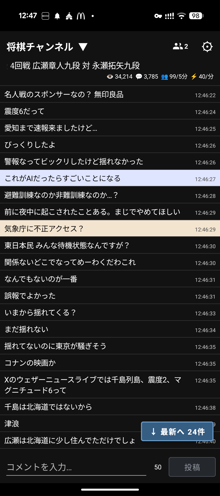
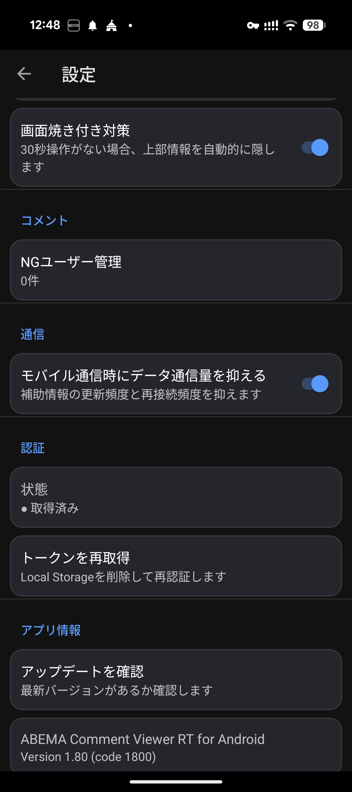

01 / コメントを読む・投稿する
リアルタイムコメント
選択したチャンネルのコメントを受信し、入力欄から投稿できます。視聴中の反応をスマートフォンで確認できます。

ANDROID VERSION
ABEMA Comment Viewer RT Android版を初めて使う方向けの案内ページです。
Android版 1.92対応 縦画面向けAndroid端末でABEMAのリアルタイムコメントを閲覧・投稿できます。
推奨環境はAndroid 12以降です。APKをダウンロードして開き、Androidの案内に従ってインストールしてください。初回はトークン取得の案内が表示される場合があります。
01 / コメントを読む・投稿する
選択したチャンネルのコメントを受信し、入力欄から投稿できます。視聴中の反応をスマートフォンで確認できます。

02 / 見たい番組を選ぶ
チャンネル一覧から視聴したいチャンネルを選びます。番組切替時にも、表示内容を確認しながら切り替えられます。

03 / 気になる発言を見つける
追随ユーザーはチャンネルごとに管理できます。表示名、並べ替え、色の表示方法を設定し、コメント一覧で見つけたい発言を分かりやすくできます。

04 / 長時間でも使いやすく
モバイル通信量を抑える設定と、長時間の表示に配慮した画面焼け対策を利用できます。NGユーザー管理、トークンの状態確認・再取得、更新確認も設定画面から行えます。

配布ページからAPKをダウンロードし、Androidの案内に従ってインストールします。許可を求められた場合は、APKを開いたアプリからのインストールを許可してください。
初回は画面の案内に従ってトークンを取得します。再取得が必要な場合は、設定画面の「トークンを再取得」から行います。完了するとチャンネル一覧を利用できます。
見たいABEMAチャンネルを選択すると、番組情報とコメント一覧が表示されます。
コメント一覧を確認し、必要に応じて入力欄から投稿します。よく見るユーザーは追随ユーザーへ追加できます。
Android 11以前では、端末のChromeまたはAndroid System WebViewの環境によって取得できないことがあります。Android 12以降を推奨しています。
スマートフォンの縦画面向けです。タブレットモードは現在、基本未対応です。